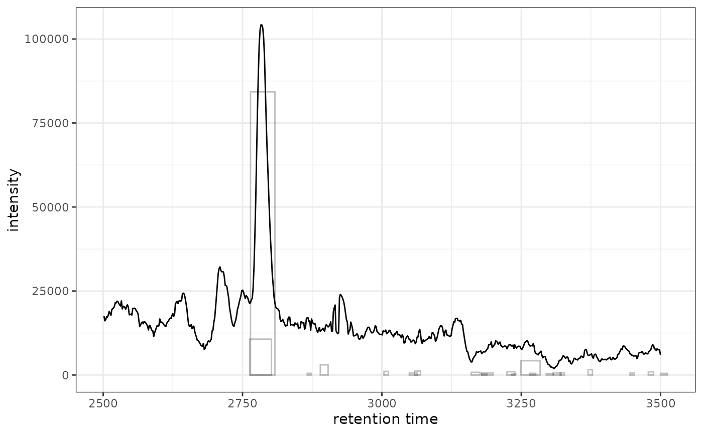

ggplot2 Version of highlightChromPeaks
Source:R/AllGenerics.R, R/ghighlightChromPeaks-methods.R
ghighlightChromPeaks.RdAdds chromatographic peak annotations to existing chromatogram plots. This is a ggplot2 implementation that works with XCMSnExp or XcmsExperiment objects, highlighting detected peaks with rectangles, points, or polygons.
Usage
ghighlightChromPeaks(
object,
rt,
mz,
peakIds = character(),
border = "#00000040",
fill = NA,
type = c("rect", "point", "polygon"),
whichPeaks = c("any", "within", "apex_within")
)
# S4 method for class 'XCMSnExp'
ghighlightChromPeaks(
object,
rt,
mz,
peakIds = character(),
border = "#00000040",
fill = NA,
type = c("rect", "point", "polygon"),
whichPeaks = c("any", "within", "apex_within")
)
# S4 method for class 'XcmsExperiment'
ghighlightChromPeaks(
object,
rt,
mz,
peakIds = character(),
border = "#00000040",
fill = NA,
type = c("rect", "point", "polygon"),
whichPeaks = c("any", "within", "apex_within")
)Arguments
- object
An
XCMSnExporXcmsExperimentobject with detected peaks.- rt
Numeric vector of length 2 specifying retention time range for peak extraction (optional).
- mz
Numeric vector of length 2 specifying m/z range for peak extraction (optional).
- peakIds
Character vector of peak identifiers (rownames from chromPeaks) to highlight. If provided,
rtandmzare ignored.- border
Color for peak borders (default: semi-transparent grey).
- fill
Color for peak fills (default: NA).
- type
Character specifying visualization type: "rect" (rectangle), "point" (apex point), or "polygon" (peak shape). Default: "rect".
- whichPeaks
Character specifying peak selection: "any" (any overlap), "within" (fully contained), or "apex_within" (apex in range). Default: "any".
Details
This function returns ggplot2 layers (geoms) that can be added to an
existing chromatogram plot using the + operator. Unlike the base R
version which modifies an existing plot, this returns composable layers.
Like the original highlightChromPeaks, this function takes the full
XCMSnExp/XcmsExperiment object and searches ALL peaks across all samples,
then filters by rt/mz. This means it can highlight peaks from multiple
samples. To highlight only peaks from a specific sample, filter the object
first using filterFile().
See also
highlightChromPeaks for the original XCMS implementation
Examples
# \donttest{
library(xcmsVis)
library(xcms)
#> Loading required package: BiocParallel
#>
#> This is xcms version 4.8.0
library(faahKO)
library(MsExperiment)
#> Loading required package: ProtGenerics
#>
#> Attaching package: ‘ProtGenerics’
#> The following object is masked from ‘package:stats’:
#>
#> smooth
library(ggplot2)
# Load and process example data
cdf_files <- system.file("cdf/KO/ko15.CDF", package = "faahKO")
xdata <- MsExperiment::readMsExperiment(spectraFiles = cdf_files)
xdata <- xcms::findChromPeaks(xdata, param = xcms::CentWaveParam())
# Extract chromatogram for plotting
chr <- xcms::chromatogram(xdata, mz = c(200, 210), rt = c(2500, 3500))
#> Extracting chromatographic data
#> Processing chromatographic peaks
# Highlight peaks from the full dataset (all samples in xdata)
gplot(chr[1, 1], peakType = "none") +
ghighlightChromPeaks(xdata, rt = c(2500, 3500), mz = c(200, 210))

# Or filter to single sample first for cleaner visualization
xdata_filtered <- xcms::filterFile(xdata, 1)
gplot(chr[1, 1], peakType = "none") +
ghighlightChromPeaks(xdata_filtered, rt = c(2500, 3500), mz = c(200, 210))
 # }
# }